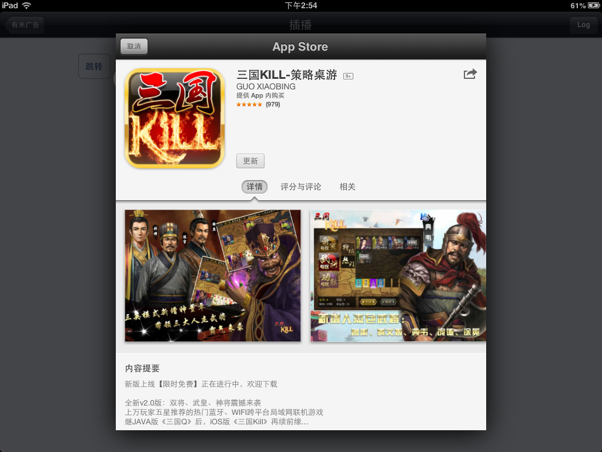
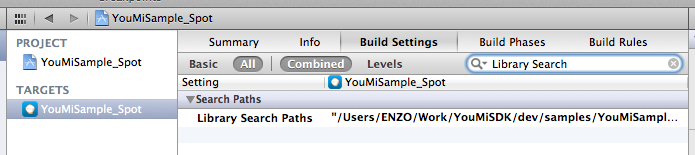

<!DOCTYPE html>
<html lang="en">
	<head>
		<meta charset="utf-8" />

		<!-- Always force latest IE rendering engine (even in intranet) & Chrome Frame
		Remove this if you use the .htaccess -->
		<meta http-equiv="X-UA-Compatible" content="IE=edge,chrome=1" />

		<title>有米广告SDK开发者文档</title>
		<meta name="viewport" content="width=device-width; initial-scale=1.0" />
		<!-- Replace favicon.ico & apple-touch-icon.png in the root of your domain and delete these references -->
		<link rel="shortcut icon" href="/favicon.ico" />
		<link rel="apple-touch-icon" href="/apple-touch-icon.png" />
		<meta name="viewport" content="width=device-width, initial-scale=1.0">
		<link href="css/bootstrap.min.css" rel="stylesheet">
		<link href="css/bootstrap-responsive.min.css" rel="stylesheet">
		<link href="css/docs.css" rel="stylesheet" />
		<script type="text/javascript" src="js/jquery-1.9.1.min.js"></script>
		<script type="text/javascript" src="js/bootstrap.min.js"></script>
		<script type="text/javascript" src="js/doc.js"></script>

		<link rel="stylesheet" href="css/xcode.min.css">
		<script src="js/highlight.pack.js"></script>
		<script>
			hljs.tabReplace = ' ';
			hljs.initHighlightingOnLoad();
		</script>
	</head>

	<body data-spy="scroll" data-target="#ym-navbar" >
		<div class="header navbar-inner">
			<div class="container clearfix">
                
                <span class="pull-left brand">有米广告 iOS SDK开发者文档</span>
			</div>
		</div>
		
		<div class="container">
			<ul class="nav nav-list bs-docs-sidenav affix" id="ym-navbar">  
				<li class='has-sub'> <a class='sub-header' href='#section_wall'>Wall Documentation	 <i class="icon-chevron-down"></i></a><ul class='nav nav-list'><li><a href='#section_wall_change'>Wall SDK Changes	</a></li><li><a href='#section_wall_procedure'>Procedures	</a></li><li><a href='#section_wall_how_to_use'>How to use	</a></li><li><a href='#section_wall_init'>1. Initialize in AppDelegate.m	</a></li><li><a href='#section_wall_enable'>2. Enable Wall[Required]	</a></li><li><a href='#section_wall_points_enable'>3. Enable Points Manager[Required if points needed]	</a></li><li><a href='#section_wall_show'>4. Show the wall	</a></li><li><a href='#section_spot_usage'>5. How to use rewarded spot	</a></li><li><a href='#section_wall_get_points'>6. Obtain Points[If points needed]	</a></li><li><a href='#section_wall_opensource'>7. Use OpenSouce data	</a></li></ul></li><li class='has-sub'> <a class='sub-header' href='#section_banner'>Banner Documentation  <i class="icon-chevron-right"></i></a><ul class='nav nav-list hide'><li><a href='#section_banner_changes'>Banner Changes	</a></li><li><a href='#section_banner_procedure'>Procedures	</a></li><li><a href='#section_banner_how_to_use'>How to use	</a></li><li><a href='#section_banner_init'>1. Initialize in AppDelegate.m	</a></li><li><a href='#section_banner_add'>2. Create Banner AD View	</a></li></ul></li><li class='has-sub'> <a class='sub-header' href='#section_pra'>Practical Function  <i class="icon-chevron-right"></i></a><ul class='nav nav-list hide'><li><a href='#section_pra_online'>1.Online Parameter (optional) </a></li></ul></li><li class='has-sub'> <a class='sub-header' href='#section_faq'>FAQ  <i class="icon-chevron-right"></i></a><ul class='nav nav-list hide'><li><a href='#section_faq_1'>1. Anything demand attention about point inqury in YouMiSDK4.7 and before </a></li><li><a href='#section_faq_2'>2. Is UDID in used </a></li><li><a href='#section_faq_3'>3. What is innter AppStore </a></li><li><a href='#section_faq_4'>4. How to test Offerwall in iOS 6 and later</a></li><li><a href='#section_faq_5'>5. Got Undefined symbols After Compilation </a></li><li><a href='#section_faq_6'>6. how to stop YouMiSDK getting GEO information </a></li><li><a href='#section_faq_7'>7. Validity of banner clicks </a></li><li><a href='#section_faq_8'>8. Difference between incentive offerwall and non-incentive offerwall </a></li><li><a href='#section_faq_9'>9. YouMiWall or YouMiView used in ViewController and delegate was set, crash after the ViewController dealloced occationally </a></li><li><a href='#section_faq_ps'>p.s </a></li></ul></li>
			</ul>

			<div class="doc-content" >
				<h1 class="sdkhead" id="section_title">YouMi iOS SDK Documentation</h1>
<h2 class="sdkhead" id="section_wall">Wall Documentation</h2>
<h3 class="sdkhead" id="section_wall_change">Wall SDK Changes</h3>
<h4>4.8</h4>
<ul>
<li>YouMiPointsManager Added</li>
</ul>
<h4>5.0</h4>
<ul>
<li>New API</li>
</ul>
<h4>5.01</h4>
<ul>
<li>Manually check points API has been added. API which to request source data in page has been added. Improve the integral loading speed of the wall</li>
</ul>
<h4>5.10</h4>
<ul>
<li>New spot api.</li>
</ul>
<h3 class="sdkhead" id="section_wall_procedure">Procedures</h3>
<h4>1. Register your app and apply for AppID</h4>
<p>Please log in <strong>www.youmi.net/sdk</strong>  and sign up a developer account; reqister your app information to obtain  <code>appid</code> and <code>appsecret</code>.</p>
<h4>2. Download YouMi SDK iOS</h4>
<h4>3. Import header files and static library to project</h4>
<h5>Head files that Offerwall needed</h5>
<ul>
<li>YouMiConfig.h</li>
<li>YouMiWall.h</li>
<li>YouMiWallAppModel.h</li>
<li>YouMiPointsManager.h (For points Inquery)</li>
</ul>
<h5>Static Library as follows</h5>
<ul>
<li>libYouMi.a</li>
</ul>
<h4>4. Add Frameworks to project</h4>
<ul>
<li>SystemConfiguration.framework</li>
<li>CFNetwork.framework</li>
<li>QuartzCore.framework</li>
<li>libsqlite3.dylib</li>
</ul>
<hr />
<h3 class="sdkhead" id="section_wall_how_to_use">How to use</h3>
<h3 class="sdkhead" id="section_wall_init">1. Initialize in AppDelegate.m</h3>
<ul>
<li>Import YouMiWall.h</li>
</ul>
<pre><code>#import &quot;YouMiWall.h&quot;
</code></pre>

<ul>
<li>In application:didFinishLaunchingWithOptions: set SDK common attributes (optional)(<strong><em>Before setting appid,appsecret</em></strong>) appid and appsecret</li>
</ul>
<pre><code>[YouMiConfig setUseInAppStore:YES];  // optional, please refer to FAQ for more details.
[YouMiConfig launchWithAppID:@&quot;[Your AppID]&quot; appSecret:@&quot;[Your AppSecret]&quot;]; 
</code></pre>

<ul>
<li>
<p>Set full screen UIWindow for full screen ADs</p>
<p>For APP that base on UIKit set below after [self.window makeKeyAndVisible] in application:didFinishLaunchingWithOptions:</p>
</li>
</ul>
<pre><code>[self.window makeKeyAndVisible];
// Set window for full screen ADs   
[YouMiConfig setFullScreenWindow:self.window];
</code></pre>

<h3 class="sdkhead" id="section_wall_enable">2. Enable Wall[Required]</h3>
<p>tell YouMi SDK the APP uses Wall. add following line after setting <code>appid</code> <code>appsecret</code></p>
<pre><code>[YouMiWall enable];
</code></pre>

<h3 class="sdkhead" id="section_wall_points_enable">3. Enable Points Manager[Required if points needed]</h3>
<p>Let YouMi SDK start quering points from YouMi server and notify if points gotted; refer to <code>6. Obtain Points</code> for explaination of <strong>automatic points management</strong> and <strong>manual points management</strong>.</p>
<p>enable after setting <code>appid</code> <code>appsecret</code>.</p>
<p>if use automatic points management [Automatic management and manual integral management must choose one]</p>
<pre><code>[YouMiPointsManager enable];
</code></pre>

<p>if use manual points management <using automatic check points or manually check points></p>
<pre><code>[YouMiPointsManager enableManually];
</code></pre>

<p>If you want to check points by youself,you should set manualcheck parameter to YES.</p>
<pre><code>[YouMiPointsManager setManualCheck:YES];
</code></pre>

<h3 class="sdkhead" id="section_wall_show">4. Show the wall</h3>
<p>Show Rewarded Wall:</p>
<pre><code>[YouMiWall showOffers:YES didShowBlock:^{
    NSLog(@&quot;YouMi Rewarded Wall did show&quot;);
} didDismissBlock:^{
    NSLog(@&quot;YouMi Rewarded Wall did dismiss&quot;);
}];
</code></pre>

<p>Show Nonrewarded Wall</p>
<pre><code>[YouMiWall showOffers:NO didShowBlock:^{
    NSLog(@&quot;YouMi Nonrewarded Wall did show&quot;);
} didDismissBlock:^{
    NSLog(@&quot;YouMi Nonrewarded Wall did dismiss&quot;);
}];
</code></pre>

<h3 class="sdkhead" id="section_spot_usage">5. How to use rewarded spot</h3>
<h5>Import YouMiWallSpot.h</h5>
<pre><code>#import &quot;YouMiWallSpot.h&quot;
</code></pre>

<h5>show spot ads</h5>
<p>Call below function in the place where you want to show spot view.</p>
<pre><code>if ([YouMiWallSpot isReady]) {
        [YouMiWallSpot showSpotViewWithBlock:^{
            NSLog(@&quot;积分插播退出&quot;);
        }];
    }
</code></pre>

<p>Please run the wallSample to get more information.</p>
<h3 class="sdkhead" id="section_wall_get_points">6. Obtain Points[If points needed]</h3>
<p>We provide two ways obtaining points, YouMiPointsManager and Server-side callback</p>
<ul>
<li>YouMiPointsManager(Provided since YouMiSDK4.8):</li>
<li>Server-side callback: Any activation information will be sent by Youmi Server to Developer's Server, and developer's Server is in charge of points management</li>
<li><strong><em>Points Query API that used before YouMiSDK 5.0 is canceled</em></strong>.</li>
</ul>
<h5>YomiPointsManager</h5>
<p>There two use of YouMiPointsManager since YouMiSDK 5.0:</p>
<ol>
<li>
<p>Automatic Points Management</p>
<p>SDK recieve points from YouMi server, notify and store points in client. Developer call spendPoints: method to consume points.</p>
<p>Automatic Points Management is simple and convenient.</p>
<p>Automatic Points Management can not defferentiate user account in an APP(throught userID).</p>
</li>
<li>
<p>Manual Points Management</p>
<p>SDK recieves points from YouMi server, notify. Notification message contains infomation(userID included) about each piece of points. Developer should deal with the infomation.</p>
<p>spendPoints: and pointsRemained: method make no effect if Manual Points Management enabled.</p>
</li>
</ol>
<p>To use YouMiPointsManagement, first enable it. refer to  <code>3. Enable Points Manager</code>.</p>
<hr />
<p><strong>Using Automatic Points Management:</strong></p>
<p>YouMiSDK will save points from YouMi severs when you using automatic points management.</p>
<p>Query points remained</p>
<pre><code>[YouMiPointsManager pointsRemained];
</code></pre>

<p>Spend points</p>
<pre><code>[YouMiPointsManager spendPoints:10];
</code></pre>

<p>YouMiSDK(not YouMiPointsManager) will send kYouMiPointsManagerRecivedPointsNotification if new points gotted.</p>
<pre><code>[[NSNotificationCenter defaultCenter] addObserver:self selector:@selector(pointsGotted:) name:kYouMiPointsManagerRecivedPointsNotification object:nil];

- (void)pointsGotted:(NSNotification *)notification {
    NSDictionary *dict = [notification userInfo];
    NSNumber *freshPoints = [dict objectForKey:kYouMiPointsManagerFreshPointsKey];

    // freshPoints just for notice, never add it to user account. Use spendPoints instead.
    UIAlertView *alert = [[UIAlertView alloc] initWithTitle:@&quot;Notice&quot; message:[NSString stringWithFormat:@&quot;Earned %@ Points&quot;, freshPoints] delegate:nil cancelButtonTitle:@&quot;OK&quot; otherButtonTitles:nil];
    [alert show];
    [alert release];

    self.pointsLabel.text = [NSString stringWithFormat:@&quot;当前积分: %d&quot;, [YouMiPointsManager pointsRemained]];
}
</code></pre>

<p><strong>Using Manual Points Management:</strong></p>
<p>YouMiSDK and YouMi severs do not save points. Points will be gone once you get notification which holding points. </p>
<p>YouMiSDK(not YouMiPointsManager) will send kYouMiPointsManagerRecivedPointsNotification if new points gotted.</p>
<pre><code>[[NSNotificationCenter defaultCenter] addObserver:self selector:@selector(pointsGotted:) name:kYouMiPointsManagerRecivedPointsNotification object:nil];

- (void)pointsGotted:(NSNotification *)notification {
    NSDictionary *dict = [notification userInfo];

    NSArray *pointInfos = dict[kYouMiPointsManagerPointInfosKey];
    for (NSDictionary *aPointInfo in pointInfos) {
        // aPointInfo information about points
        NSLog(@&quot;Point Amount：%@&quot;, aPointInfo[kYouMiPointsManagerPointAmountKey]);
        NSLog(@&quot;userID：%@&quot;, aPointInfo[kYouMiPointsManagerPointUserIDKey]);
        NSLog(@&quot;Product Name：%@&quot;, aPointInfo[kYouMiPointsManagerPointProductNameKey]);

        // TODO Deal with it
    }
}
</code></pre>

<p>Two ways will be provided to check points from youmisdk version 5.01 on.   <code>new</code></p>
<p>1、automatic check points</p>
<p>YouMiSDk will check points from severs whenever you app become appDidBecomeActive.
   But also you can call  <code>[YouMiPointsManager checkPoints];</code>  to check points.</p>
<p>2、manually check points</p>
<p>YouMiSDK will not check points from severs.</p>
<p>You have to call  <code>[YouMiPointsManager checkPoints];</code> to check points by youself.</p>
<h5>Server-side callback</h5>
<p>For more details, please refer to </p>
<p><a href="http://wiki.youmi.net/%E5%AF%B9%E5%BC%80%E5%8F%91%E8%80%85%E7%9A%84%E7%A7%AF%E5%88%86%E5%8F%8D%E9%A6%88%E6%8E%A5%E5%8F%A3">Piont Feedback API for Developers</a></p>
<h3 class="sdkhead" id="section_wall_opensource">7. Use OpenSouce data</h3>
<p>YouMi Provide APP AD infomation list for developer. Developer can use these infomation and custom UI.</p>
<p>fetching APP AD list(rewarded):This is the default interface request page 1 of 10 source data:</p>
<pre><code>[YouMiWall requestOffersOpenData:YES revievedBlock:^(NSArray *theApps, NSError *error) {
            // theApps is  YouMiWallAppModel object list
        if (!error) {
            self.apps = theApps;
            [self.table reloadData];
        }
}];
</code></pre>

<p>This interface can be custom what page how many data requests. For example, the following interface request page 2 of 2 the source data</p>
<pre><code>[YouMiWall requestOffersOpenData:YES page:2 count:2 revievedBlock:^(NSArray *theApps, NSError *error) {
        // theApps 是 YouMiWallAppModel 的对象列表
        if (!error) {
            _tableviewController.apps = theApps;
            [self.navigationController pushViewController:_tableviewController animated:YES];
        }
    }];
}];
</code></pre>

<p>install an APP:</p>
<p>When the user clicks on an APP, called userInstallApp: method to install the APP:</p>
<pre><code>- (void)tableView:(UITableView *)tableView didSelectRowAtIndexPath:(NSIndexPath *)indexPath {
    [tableView deselectRowAtIndexPath:indexPath animated:YES];
    YouMiWallAppModel *model = self.apps[indexPath.row];
    [YouMiWall userInstallApp:model];
}
</code></pre>

<p>refer to demo for detail.</p>
<hr />
<h2 class="sdkhead" id="section_banner">Banner Documentation</h2>
<h3 class="sdkhead" id="section_banner_changes">Banner Changes</h3>
<h4>4.6 - 4.7</h4>
<ul>
<li>AppID and AppSecret only be set at launch time via YouMiConfig;</li>
<li>Common attributes like Channel number and CPS info can only be set at launch time via YouMiConfig; No need to set on every offerwall and banner instance.</li>
<li>Add function to end the switch of opening inner Appstore on iOS6.</li>
</ul>
<h3 class="sdkhead" id="section_banner_procedure">Procedures</h3>
<h4>1. Register your app and apply for AppID</h4>
<p>Please log in <strong>www.youmi.net/sdk</strong>  and sign up a developer account; reqister your app information to obtain  <code>appid</code> and <code>appsecret</code>.</p>
<h4>2. Download YouMi SDK iOS</h4>
<h4>3. Import header files and static library to project</h4>
<h5>Header files needed</h5>
<ul>
<li>YouMiConfig.h</li>
<li>YouMiDelegateProtocol.h</li>
<li>YouMiView.h</li>
</ul>
<h5>Static Library</h5>
<ul>
<li>libYouMi.a</li>
</ul>
<h4>4. Add frameworks to project</h4>
<ul>
<li>SystemConfiguration.framework</li>
<li>CFNetwork.framework</li>
<li>QuartzCore.framework</li>
<li>libsqlite3.dylib</li>
</ul>
<h3 class="sdkhead" id="section_banner_how_to_use">How to use</h3>
<h3 class="sdkhead" id="section_banner_init">1. Initialize in AppDelegate.m</h3>
<ul>
<li>
<p>Import YouMiConfig.h</p>
<pre><code>#import "YouMiConfig.h"
</code></pre>
</li>
<li>
<p>In application:didFinishLaunchingWithOptions: set SDK common attributes (optional)(<strong><em>Before setting appid,appsecret</em></strong>) appid and appsecret</p>
<pre><code>// [YouMiConfig setShouldGetLocation:NO]; // Optional, stop YouMiSDK from getting GEO information
[YouMiConfig launchWithAppID:@"[Your AppID]" appSecret:@"[Your AppSecret]"];
</code></pre>
</li>
</ul>
<h3 class="sdkhead" id="section_banner_add">2. Create Banner AD View</h3>
<pre><code>    adView = [[YouMiView alloc] initWithContentSizeIdentifier:YouMiBannerContentSizeIdentifier320x50 delegate:nil];

    //set delegate[Optional]
    adView.delegate = self;
    //set banner attributes [Optional]
    adView.indicateTranslucency = YES;
    adView.indicateRounded = NO;
    //add keywords [Optional]
    [adView addKeyword:@"女性"];

    // start getting ads
    [adView start];

    // add banner to view [Example]
    [self.view addSubview:adView];
</code></pre>
<hr />
<h2 class="sdkhead" id="section_pra">Practical Function</h2>
<h3 class="sdkhead" id="section_pra_online">1.Online Parameter (optional)</h3>
<h5>1.0 Online Parameter Introduction</h5>
<p>Online parameter is the new service provided on Youmi network. Developer can modify the configuration setting such as the greeting. prop price and ad switch etc. It exists as Key-Value.</p>
<h5>1.1 Implement online Parameter</h5>
<p>Here developer can set the assigned app parameter on the dashboard of Youmi Website, and invoke it from coding. The API sample is as follows:
Sample Code:</p>
<pre><code>NSString *value = [YouMiConfig onlineValueForKey:@&quot;testCh&quot;];
    NSLog(@&quot;online value：%@&quot;,value);
</code></pre>

<hr />
<h2 class="sdkhead" id="section_faq">FAQ</h2>
<h3 class="sdkhead" id="section_faq_1">1. Anything demand attention about point inqury in YouMiSDK4.7 and before</h3>
<ol>
<li>An APP install multiple times will just return points <strong>Once</strong>;</li>
<li>YouMi server won't store points after querying successfully, developer should manage the points once gotted;</li>
<li>It's recommended to query points 2-3 times (45 second interval) after application become active;</li>
<li>YouMiPointsManager is better choice to get points。</li>
</ol>
<h3 class="sdkhead" id="section_faq_2">2. Is UDID in used</h3>
<p>YouMiSDK 4.7 and following versions do not obtain UDID</p>
<h3 class="sdkhead" id="section_faq_3">3. What is innter AppStore</h3>
<p><code>inner AppStore</code> show AppStore page inside APP。 like picture bellow in iPad:</p>
<p></p>
<p>Users don't need to jump outside of current APP to install APPs in Offerwall if <code>inner AppStore</code> enabled, however there's some restriction.</p>
<ol>
<li>Can only be enabled in iOS 6 and above</li>
<li>If your APP has not reviewed by AppStore (in other words: install by xcode), it can just show <code>inner AppStore</code>, you can't install APPs from it.</li>
</ol>
<h3>4. How to test Offerwall in iOS 6 and later{: #section_faq_4 .sdkhead}</h3>
<p>YouMiSDK provides [YouMiConfig setUseInAppStore:] to control <code>inner AppStore</code>. While developing you can disable <code>inner AppStore</code>, it's highly recommended to re-enable it before sumiting it to AppStore.</p>
<h3 class="sdkhead" id="section_faq_5">5. Got Undefined symbols After Compilation</h3>
<p>Usualy happen in the case of existing 2 YouMiSDK in the project. You should check:<br />
1. if there's 2 libYouMi.a and it's headers in the project, remove the old one if yes;<br />
2. if there's 2 libYouMi.a and it's headers under the project <strong>directory</strong>, remove the old one if yes;<br />
3. if there's 2 pathes contain YouMiSDK in Target-&gt;Build Settings-&gt;Library Search Paths, remove the old one if yes.
</p>
<h3 class="sdkhead" id="section_faq_6">6. how to stop YouMiSDK getting GEO information</h3>
<p>Before</p>
<pre><code>[YouMiConfig launchWithAppID:@&quot;Your AppID&quot; appSecret:@&quot;Your AppSecret&quot;]
</code></pre>

<p>Add this line</p>
<pre><code>[YouMiConfig setShouldGetLocation:NO];
</code></pre>

<h3 class="sdkhead" id="section_faq_7">7. Validity of banner clicks</h3>
<p>Multiple clicks just record one.</p>
<h3 class="sdkhead" id="section_faq_8">8. Difference between incentive offerwall and non-incentive offerwall</h3>
<p>Non-incentive offerwall is more likely shown as recommendation list here.</p>
<h3 class="sdkhead" id="section_faq_9">9. YouMiWall or YouMiView used in ViewController and delegate was set, crash after the ViewController dealloced occationally</h3>
<p>Remember to set YouMiWall's and YouMiView's delegate to nil.</p>
<h3 class="sdkhead" id="section_faq_ps">p.s</h3>
<ul>
<li>If you have any question during Youmi SDK integration, or you have any suggestion and advice for our SDK optimization, please contact us.
QQ: 539369969 <br />
Skype:juliazhang061
Email:zhangyujuan@youmi.net</li>
</ul>
			</div>
		</div>

<!--style="margin-top:30px;" style="margin-top:60px;" -->
	</body>
</html>
